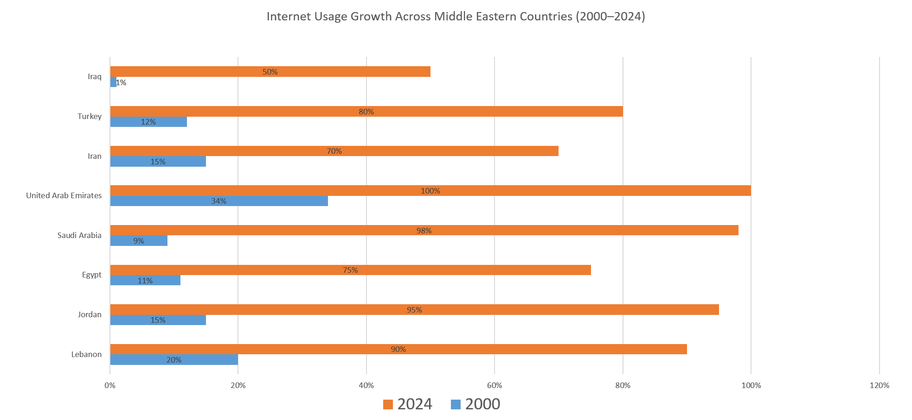

Internet Statistics in the Middle East
Table of Contents
Introduction
The Middle East has seen a significant increase in internet penetration over the past two decades. This webpage explores the growth of internet usage, regional comparisons, and challenges in digital adoption.
Growth Over the Years
The chart below shows internet penetration from 2000 to 2024 in selected countries of the Middle East.

Regional Comparison
The table below compares internet usage across Middle Eastern countries in 2024.
| Country | Internet Users (%) | |
|---|---|---|
| 2000 | 2024 | |
| Lebanon | 20% | 90% |
| Jordan | 15% | 95% |
| Egypt | 11% | 75% |
| Saudi Arabia | 9% | 98% |
| United Arab Emirates | 34% | 100% |
| Iran | 15% | 70% |
| Turkey | 12% | 80% |
| Iraq | 1% | 50% |
Challenges to Internet Adoption
While the internet adoption rate in the Middle East has been increasing over the years, several challenges still impede the full integration and accessibility of the internet in the region. These challenges include:
- Infrastructure Limitations: Many countries in the Middle East, especially in rural and remote areas, face significant infrastructure deficits. Insufficient or outdated broadband infrastructure limits access to high-speed internet, making it difficult for people in these regions to fully benefit from digital technologies.
- Digital Literacy: Despite increasing internet usage, a large portion of the population remains digitally illiterate. This issue is particularly prevalent among older generations and those in underprivileged areas. Without the necessary digital skills, users are less able to navigate the online world effectively, limiting the overall impact of internet access.
- Cultural and Language Barriers: Although the internet has become increasingly accessible, the content available in Arabic or other regional languages remains limited compared to English. The lack of localized content in terms of language and cultural relevance deters many people from fully engaging with the digital world. This can contribute to lower usage rates, especially among non-English-speaking populations.
- Government Regulations and Censorship: Several Middle Eastern countries impose strict regulations on internet usage, including monitoring and censorship of online content. These regulations limit access to information and restrict the freedom of expression on the internet. The fear of surveillance or legal repercussions can discourage people from using the internet to its full potential.
- Economic Disparities: Internet access often comes at a high cost, particularly in countries where broadband is not subsidized or widely available. In regions where economic disparities are prominent, many individuals and families cannot afford the devices or internet plans needed to connect to the digital world, leaving a significant portion of the population without access.
- Political Instability: Political turmoil and conflict in parts of the Middle East, such as in Syria, Yemen, and Libya, have disrupted infrastructure development and internet access. In war-torn regions, damaged communication infrastructure and unstable governance further hinder internet adoption and access.
Despite these challenges, the Middle East has made significant progress in internet adoption, especially in urban centers, and continues to develop initiatives to overcome these barriers, including expanding digital literacy programs, investing in infrastructure, and promoting more inclusive and accessible internet services.